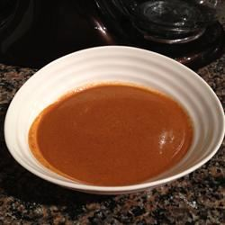

Enchilada Sauce

Description
This is a great, authentic enchilada sauce, without tomato sauce.
Ingredients
- 1 tablespoon vegetable oil
- 1 cup diced onion
- 3 tablespoons chopped garlic
- 1 teaspoon dried oregano
- 1 teaspoon ground cumin
- 1/4 teaspoon ground cinnamon
- 3 tablespoons all-purpose flour
- 5 tablespoons hot chili powder
- 4 1/2 cups chicken broth
- 1/2 (1 ounce) square semisweet chocolate
Steps
- Heat oil in a large saucepan over medium-high high heat. Saute onion until tender. Stir in garlic, oregano, cumin, and cinnamon; saute for a few minutes.
- Stir in flour and chili powder, stirring until sauce thickens. Slowly whisk chicken broth; reduce until sauce reaches desired consistency. Stir in chocolate until melted and well-blended.